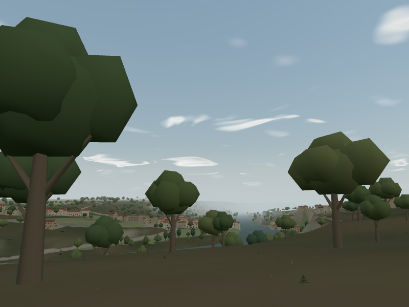
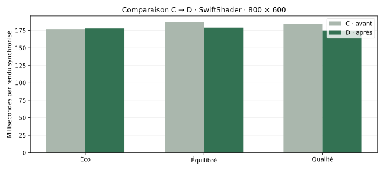
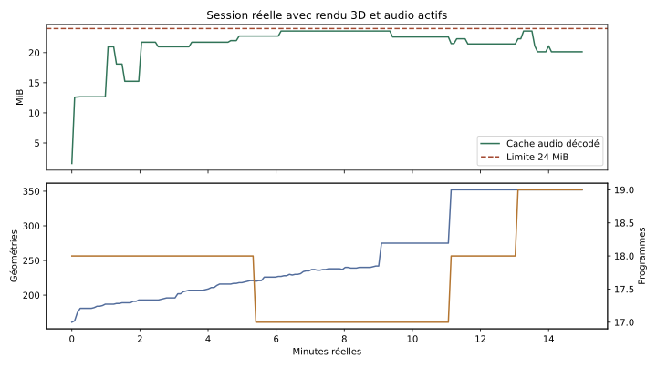

Neuf minutes de marche, puis des stations explicites près de la berge et en forêt. Aucun événement naturel n’a été forcé pour la capture. Le volume et les gains du jeu sont conservés, sans normalisation sonore.
Berge · soirée pluvieuse
Forêt · vent
Forêt · nuit orageuse

Les quinze paires utilisent la même caméra, la même date, le même vent et les mêmes géométries rendues. L’écart maximal est d’un niveau sur 255 par canal. Aucun effet n’a été retiré et les nuages conservent leur pleine résolution.
Temps de rendu synchronisé sous SwiftShader, à 800 × 600. Deux tours, huit échantillons par version et cas ; ordre C/D alterné à chaque mesure. Ces chiffres ne sont ni des FPS physiques ni une validation Android.
| Profil | C · médiane | D · médiane | Évolution du temps |
|---|

Les petits gains sont variables selon le protocole et la situation. Éco reste globalement proche de C. Les requêtes de minuterie graphique logicielle, conservées séparément, ne démontrent pas une amélioration GPU uniforme. Le surcoût A mesuré sous SwiftShader reste documenté dans le rapport.Trente changements rapides de météo, heure et profil ; trente-six recréations de l’atmosphère ; vingt-quatre cycles de création et fermeture audio. Le retour d’un véritable onglet masqué, le gel/reprise du build compilé, le volume et le remplacement d’une captation indisponible sont vérifiés.

Le test de pression du cache évite huit appels fetch et décodages inutiles. La captation est acceptée dès que deux buffers épinglés sont libérés. Les 93 ressources et leurs crédits restent conservés.
Les tests de rendu utilisent un Chromium distinct avec SwiftShader. Le test de visibilité utilise un navigateur fenêtré dans un affichage X11 privé, connecté sans l’émulation de focus habituelle de Playwright. L’onglet devient réellement caché et son AudioContext réellement suspendu. Le gel/reprise est vérifié sur le build compilé local, sans reconnexion du client de développement Vite.
La session est enregistrée après le limiteur, avec le volume maître du jeu à 70 %. Les traces sont collectées toutes les cinq secondes. La capture et l’observation ajoutent du coût ; cette session n’est pas un benchmark comparatif. Les compteurs de cache et de GPU ne couvrent pas toute la mémoire native du processus ou du pilote.
Pour tester la version compilée dans un navigateur disposant de WebGL : prévisualisation locale isolée. La galerie fonctionne dans le Chrome partagé sans WebGL. Aucun hébergement public, fusion ou workflow de production n’est modifié.
Validation artistique encore attendue : présence et naturel des sons, équilibre des ambiances et plaisir de promenade. Les limites de la représentation géographique, des captations faites ailleurs, de la pluie, de la nuit et des orages sont détaillées dans le rapport.